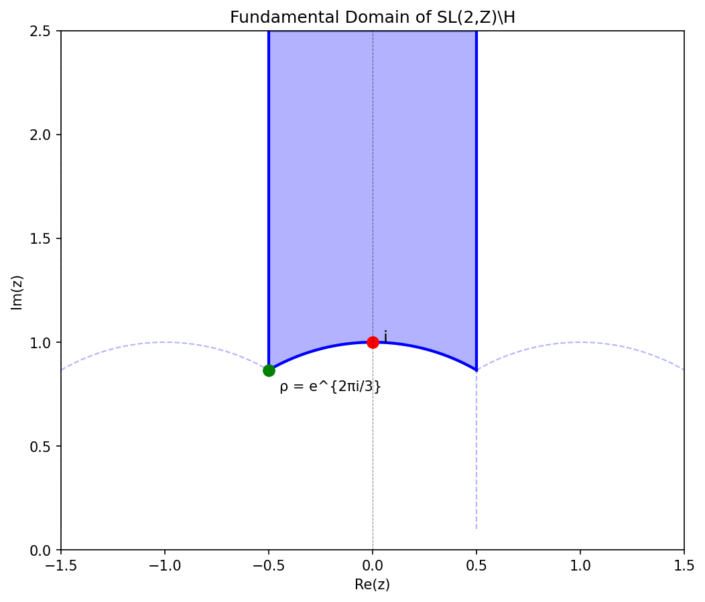

We define and implement the hyperbolic upper half-plane $\mathbb{H}$ with the Poincaré metric,
the modular group $SL(2,\mathbb{Z})$, and the modular surface $\mathcal{M} = SL(2,\mathbb{Z}) \backslash
\mathbb{H}$.
This is the geometric space where the Hilbert-Pólya operator must live.
1. The Hyperbolic Upper Half-Plane
$$\mathbb{H} = \{ z = x + iy \in \mathbb{C} : y > 0 \}$$
With the Poincaré metric:
$$ds^2 = \frac{dx^2 + dy^2}{y^2}$$
| Property |
Value |
| Curvature $K$ |
$-1$ (constant) |
| Geodesics |
Vertical lines and semicircles ⊥ to ℝ |
| Area element |
$dA = dx\,dy / y^2$ |
2. The Modular Group
$$SL(2,\mathbb{Z}) = \left\{ \begin{pmatrix} a & b \\ c & d \end{pmatrix} : a,b,c,d \in \mathbb{Z}, \; ad -
bc = 1 \right\}$$
Acts on $\mathbb{H}$ by Möbius transformations: $\gamma \cdot z = \frac{az + b}{cz + d}$
Generators:
- $T = \begin{pmatrix} 1 & 1 \\ 0 & 1 \end{pmatrix}$: $z \mapsto z + 1$ (translation)
- $S = \begin{pmatrix} 0 & -1 \\ 1 & 0 \end{pmatrix}$: $z \mapsto -1/z$ (inversion)
3. The Fundamental Domain
$$\mathcal{F} = \{ z \in \mathbb{H} : |z| \geq 1, \; |\text{Re}(z)| \leq \tfrac{1}{2} \}$$
| Property |
Value |
| Area |
$\pi/3$ |
| Cusps |
1 (at $\infty$) |
| Elliptic points |
$i$ (order 2), $\rho = e^{2\pi i/3}$ (order 3) |
4. Why This Space?
Our no-go theorem (Stages 7-9) proved that Euclidean operators have spectral density $N(E) \sim E$.
But Riemann zeros have $N(T) \sim T \log T$.
The ONLY known geometric origin of $E \log E$ density is:
- Hyperbolic surfaces with cusps
- Geodesic length spectra on $\Gamma \backslash \mathbb{H}$
Therefore, the Hilbert-Pólya operator must live on $SL(2,\mathbb{Z}) \backslash \mathbb{H}$.
5. Visualization of the Fundamental Domain
The fundamental domain $\mathcal{F}$ is the shaded region below:

6. Files
hyperbolic_metric.py — Poincaré metric, distances, geodesicsmodular_group.py — SL(2,Z) action, fundamental domainfundamental_domain.png — Visualization of the fundamental domain